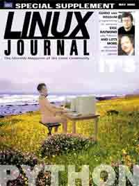

Shutdown Archive web server
Search:

Python Suppliment
Contents
Silly Articles
JPython: The Felicitous Union of Python and Java
by David Ascher
No one expects the Spanish Inquisition, but everyone expects Java—an overview of JPython, an elegant scripting solution for Java systems.
Computer Programming for Everybody
by Guido van Rossum
And now for something completely different...Guido gives us a peek into the future of CP4E—will the Spanish Inquisition be there?
Why Python?
by Eric Raymond
Cardinal Biggles had Eric in the comfy chair for over four hours before wringing this confession from him...
Even Sillier Articles
Mailman
by Barry A. Warsaw
You don't have to wait until pigs fly for good list management—just call the mailman.
Python Conference Report
by Andrew M. Kuchling
Some of the ongoing shifts in the Python community were apparent at the Eighth International Python Conference (IPC8), held in Washington, DC this past January.
Not A Bit Silly Article
Book Review
Python Essential Reference
by Phil Hughes
Departments
From the Editor
by Marjorie Richardson
Strictly On-Line
Python Programming for Beginners
by Jacek Artymiak
A practical introduction to writing non-trivial applications in Python.
Archive Index
Issue Table of Contents
Shutdown Archive web server
Search:
Copyright © 1994 - 2018
Linux Journal
. All rights reserved.